第 13 回 総合演習¶
所要時間の目安: 5 時間 / 前提: 第 1〜12 回
この回のゴール¶
新しい機能を、要件 → 設計 → 実装 → テスト → 変異 → 取り込み → 点検 の順に、最初から最後まで作れる。
実装の前に、置き場所と依存の向き を決められる。
アルゴリズムの 計算量 を見積もり、素朴な書き方と比べられる。
自分の実装の 弱点を、自分で見つけて、書き出せる。
機能を 本体に取り込む手順 (CLI・文書・テスト・HTML 版・CI) を、漏れなく挙げられる。
この回は、新しい知識を学ぶ回ではありません。これまでの 12 回を、1 つの作業に通して使う 回です。 題材は小さな機能ですが、手順は、実際の保守・拡張と同じです。
1. 題材と進め方¶
題材: 依存の中心 (ハブ) を探す機能 多くのモジュールから使われているモジュールは、変更の影響が広い。そうしたモジュールを、一覧にしたい。

このリポジトリを 変更せずに、一時ディレクトリの中で ①〜⑥ を行います (⑦ は手順を示すので、宿題として実際にやってみてください)。 こうすると、講義の例が、実行して確かめられる まま、リポジトリを汚しません。
2. ① 要件と ② 設計¶
要件を 1 文で書く¶
「パッケージの各モジュールについて、何個のモジュールから import されているか (被依存数 = fan-in)、 何個のモジュールを import しているか (依存数 = fan-out) を数え、被依存数の多い順に並べる。 被依存数が基準以上のものを ハブ と呼ぶ。」
1 文で書けない要件は、まだ分かっていません。書けたら、次の 3 つを自問します。
自問 |
この題材での答え |
|---|---|
入力は何か |
第 5 回の |
出力は何か |
|
失敗するのは、どんなとき |
基準 ( |
置き場所と依存の向き (第 8 回・第 10 回)¶
案 |
長所 |
短所 |
判断 |
|---|---|---|---|
|
呼びやすい |
|
却下 |
|
手軽 |
テストしにくい (引数や出力と混ざる)。CLI は薄く保つ |
却下 |
新しいモジュール |
純粋な関数だけ。テストしやすい |
ファイルが 1 つ増える |
採用 |
hubs.py が import するのは structure_map だけ。structure_map は Sphinx を import しない (第 10 回の構造テスト) ので、
新しいモジュールも core のまま です。依存の向きは、cli → hubs → structure_map の一方向で、循環しません。
3. ③ 実装¶
アルゴリズム: 数え上げ¶
依存の組 (使う側, 使われる側) の集合を 1 回だけ走査 し、使う側の fan_out と、使われる側の fan_in を、それぞれ +1 します。

計算量の比較 (モジュール数 M、依存の数 E):
書き方 |
計算量 |
説明 |
|---|---|---|
素朴: モジュールごとに、全ての依存を走査して数える |
|
「 |
採用: 1 回走査して |
|
依存を 1 度見るだけ |
このリポジトリの規模 (十数モジュール) では、どちらも一瞬です。それでも Counter を選ぶ のは、
書き方が 短く・読みやすく、規模が大きくなっても 困らない からです (第 5 回: 計算量は、規模が増えたときに効く)。
整列の鍵¶
整列の鍵は、(-被依存数, -依存数, 名前) です。
マイナスを付けて、多い順 (降順)。
同数のときは、依存数の多い順、最後に 名前順。名前を入れるのは、出力を決定的 にするため (第 10 回)。
弱点を、最初から意識する¶
Graph.edges には、依存の 種類 があります (第 5 回)。
種類 |
意味 |
|---|---|
|
モジュール直下の import (読み込み時に実行される) |
|
関数の中の import (呼ばれたときに初めて読み込まれる) |
|
モジュール名と一致する文字列 ( |
どれを数えるかで、結果が変わります。既定は import だけ にし、引数 kinds で選べるようにします。
4. ④ テストと ⑤ 変異¶
以下は、実装・テスト・変異・実データでの実行を、ひとつにまとめた例 です。上から読んでください。
HUBS: 実装 (モジュールhubs.pyの中身)。TESTS: テスト。小さなパッケージをtmp_pathに作ってscan_packageにかける (偽物を作らず、本物の読み取り を使う)。変異: 実装を 4 通りに壊して、どのテストが落ちるか を確かめる。
最後に、本物の
docspipelineに対して実行する。
# 実行できる
import re
import subprocess
import sys
import tempfile
from pathlib import Path
import docspipeline
HUBS = '''"""依存の中心 (ハブ) を探す。被依存数 (fan-in) が多いモジュールは、変更の影響が広い。"""
from __future__ import annotations
from collections import Counter
from collections.abc import Iterable
from dataclasses import dataclass
from docspipeline.structure_map import Graph
@dataclass(frozen=True)
class Degree:
"""1 つのモジュールの次数。"""
name: str
fan_in: int # このモジュールを import するモジュールの数
fan_out: int # このモジュールが import するモジュールの数
def degrees(graph: Graph, kinds: Iterable[str] = ("import",)) -> list[Degree]:
"""全モジュールの次数を、被依存数の多い順 (同数なら依存数の多い順、名前順) に返す。
Args:
graph: ``scan_package`` の結果。
kinds: 数える依存の種類 (``import``・``deferred``・``reference``)。
"""
edges: set[tuple[str, str]] = set()
for kind in kinds:
edges |= graph.edges(kind) # 集合の和: 同じ組が 2 種類にあっても、1 回だけ数える
fan_in: Counter[str] = Counter()
fan_out: Counter[str] = Counter()
for src, dst in edges:
fan_out[src] += 1
fan_in[dst] += 1
rows = [Degree(m.name, fan_in[m.name], fan_out[m.name]) for m in graph.modules]
return sorted(rows, key=lambda d: (-d.fan_in, -d.fan_out, d.name))
def hubs(graph: Graph, minimum: int = 3, kinds: Iterable[str] = ("import",)) -> list[Degree]:
"""被依存数が ``minimum`` 以上のモジュール。
Raises:
ValueError: ``minimum`` が 1 未満のとき (全モジュールが該当してしまい、意味が無いため)。
"""
if minimum < 1:
raise ValueError("minimum は 1 以上にしてください")
return [d for d in degrees(graph, kinds) if d.fan_in >= minimum]
'''
TESTS = '''
import pytest
from docspipeline.structure_map import scan_package
from hubs import Degree, degrees, hubs
STAR = {
"core": '"""core."""\\n',
"a": "from . import core\\n",
"b": "from . import core\\nfrom . import core as again\\n",
"c": "from . import core\\nfrom . import a\\n",
}
def make_graph(tmp_path, files):
pkg = tmp_path / "pkg"
pkg.mkdir()
(pkg / "__init__.py").write_text('"""pkg."""\\n')
for name, body in files.items():
(pkg / f"{name}.py").write_text(body)
return scan_package(pkg)
def test_counts_the_modules_that_import_it_and_that_it_imports(tmp_path):
rows = {d.name: d for d in degrees(make_graph(tmp_path, STAR))}
assert rows["pkg.core"] == Degree("pkg.core", fan_in=3, fan_out=0)
assert rows["pkg.c"] == Degree("pkg.c", fan_in=0, fan_out=2)
assert rows["pkg.a"] == Degree("pkg.a", fan_in=1, fan_out=1)
def test_importing_the_same_module_twice_counts_once(tmp_path):
rows = {d.name: d for d in degrees(make_graph(tmp_path, STAR))}
assert rows["pkg.b"].fan_out == 1
def test_order_is_fan_in_then_fan_out_then_name(tmp_path):
names = [d.name for d in degrees(make_graph(tmp_path, STAR))]
assert names == ["pkg.core", "pkg.a", "pkg.c", "pkg.b", "pkg"]
def test_hubs_use_the_threshold_inclusively(tmp_path):
graph = make_graph(tmp_path, STAR)
assert [d.name for d in hubs(graph, minimum=3)] == ["pkg.core"]
assert hubs(graph, minimum=4) == []
@pytest.mark.parametrize("minimum", [0, -1])
def test_a_threshold_below_one_is_rejected(tmp_path, minimum):
with pytest.raises(ValueError, match="1 以上"):
hubs(make_graph(tmp_path, STAR), minimum=minimum)
def test_a_package_with_no_modules_has_no_hubs(tmp_path):
graph = make_graph(tmp_path, {})
assert hubs(graph) == []
assert [d.fan_in for d in degrees(graph)] == [0]
def test_imports_inside_functions_count_only_when_asked(tmp_path):
graph = make_graph(tmp_path, {**STAR, "d": "def f():\\n from . import core\\n"})
core = lambda kinds: next(d for d in degrees(graph, kinds) if d.name == "pkg.core")
assert core(("import",)).fan_in == 3
assert core(("import", "deferred")).fan_in == 4
'''
def pytest_summary(root):
r = subprocess.run(
[sys.executable, "-B", "-m", "pytest", "-q", "-p", "no:cacheprovider", "--tb=no"],
cwd=root,
capture_output=True,
text=True,
encoding="utf-8",
)
last = [line for line in r.stdout.splitlines() if line.strip()][-1]
return re.sub(r" in [0-9.]+s.*$", "", last)
MUTANTS = {
"被依存と依存を取り違える": ("fan_in[dst] += 1", "fan_in[src] += 1"),
"基準を「以上」でなく「超える」に": ("d.fan_in >= minimum", "d.fan_in > minimum"),
"整列から依存数を外す": ("(-d.fan_in, -d.fan_out, d.name)", "(-d.fan_in, d.name)"),
"基準の検査を 0 未満に緩める": ("if minimum < 1:", "if minimum < 0:"),
}
with tempfile.TemporaryDirectory() as tmp:
root = Path(tmp)
(root / "test_hubs.py").write_text(TESTS, encoding="utf-8")
(root / "hubs.py").write_text(HUBS, encoding="utf-8")
print("元の実装 :", pytest_summary(root))
for label, (old, new) in MUTANTS.items():
assert HUBS.count(old) == 1, label
(root / "hubs.py").write_text(HUBS.replace(old, new), encoding="utf-8")
result = pytest_summary(root)
print(f"変異: {label}: {'見つけた' if 'failed' in result else '見逃した'} ({result})")
(root / "hubs.py").write_text(HUBS, encoding="utf-8")
sys.path.insert(0, tmp)
import hubs
from docspipeline.structure_map import scan_package
graph = scan_package(Path(docspipeline.__file__).parent)
prefix = "docspipeline."
print("--- 本物の docspipeline (import だけ) ---")
for d in hubs.degrees(graph)[:4]:
print(f" {d.name.removeprefix(prefix):12} 被依存 {d.fan_in} 依存 {d.fan_out}")
print("ハブ (被依存 3 以上):", [d.name.removeprefix(prefix) for d in hubs.hubs(graph)])
plain = next(d for d in hubs.degrees(graph) if d.name == prefix + "guard")
wide = next(d for d in hubs.degrees(graph, ("import", "reference")) if d.name == prefix + "guard")
print("guard の被依存: import だけ =", plain.fan_in, "/ 名前による参照も数えると =", wide.fan_in)
# 出力
元の実装 : 8 passed
変異: 被依存と依存を取り違える: 見つけた (4 failed, 4 passed)
変異: 基準を「以上」でなく「超える」に: 見つけた (1 failed, 7 passed)
変異: 整列から依存数を外す: 見つけた (1 failed, 7 passed)
変異: 基準の検査を 0 未満に緩める: 見つけた (1 failed, 7 passed)
--- 本物の docspipeline (import だけ) ---
files 被依存 4 依存 0
confluence 被依存 3 依存 0
mmdc 被依存 3 依存 0
cli 被依存 1 依存 8
ハブ (被依存 3 以上): ['files', 'confluence', 'mmdc']
guard の被依存: import だけ = 0 / 名前による参照も数えると = 1
読み解く¶
観点 |
見るところ |
|---|---|
テストは 本物の読み取り を使う |
|
境界値 |
|
重複 |
同じモジュールを 2 回 import しても、1 回 と数える (依存は集合) |
順序 |
完全な順序を 1 つのテスト で確かめる (3 段の鍵のうち 1 つを外すと、順序が変わるように、データを選んだ) |
変異 |
4 通りの壊し方を、すべて見つけた ことを確かめた。1 つでも見逃したら、テストを足す |
弱点: 見えているものと、見えていないもの¶
最後の 2 行に、この実装の限界 が出ています。guard は、import の依存だけで数えると、どこからも使われていない ように見えます。
実際には、config が 名前の文字列 で読み込んでいます (第 7 回)。名前による参照も数えると、被依存数は増えます。
ハブの一覧は、「どの種類の依存を数えたか」を添えないと、誤解を生みます。数字は、定義とセットで読みます。
(上位の files は、第 11 回の図で矢印を省いた 共通部品 です。ハブ = 悪いもの、ではありません。変更の影響が広いので、慎重に変える という目印です。)
5. ⑦ 本体に取り込む¶
実装が確かめられたら、本体 (リポジトリ) に取り込みます。ここは、宿題として、実際にやってください。

CLI の足し方は、既存のコマンドを手本にします (第 8 回)。
# 引用: docspipeline/cli.py::cmd_check_mermaid
def cmd_check_mermaid(args: argparse.Namespace) -> int:
"""``check-mermaid``: 全ての Mermaid ブロックが、標準の ``%%{init}%%`` の行で始まっているかを確かめる。
GitHub (Markdown のまま) と Sphinx (``mmdc`` で SVG にした HTML) で、図の色とフォントを揃えるため。
``--fix`` で、足りない行を入れる。
"""
roots = [Path(p) for p in args.paths]
missing_paths = [p for p in roots if not p.exists()]
if missing_paths:
for path in missing_paths:
print(f"エラー: パスがありません: {path}", file=sys.stderr)
return 2
problems = 0
for path in iter_markdown_files(roots):
text = path.read_text(encoding="utf-8")
lines = mmdc.check_mermaid_text(text)
if not lines:
continue
if args.fix:
path.write_text(mmdc.fix_mermaid_text(text), encoding="utf-8")
print(f"修正: {path} ({len(lines)} か所)")
else:
problems += len(lines)
for line in lines:
print(f"{path}:{line}: Mermaid ブロックが、標準の %%{{init}}%% の行で始まっていません")
if problems:
print("docspipeline check-mermaid --fix で、標準の行を入れられます", file=sys.stderr)
return 1 if problems else 0
手本から学ぶこと |
新しいコマンドでは |
|---|---|
1 つの関数が 1 つのコマンド。 |
|
最初に入力を検査 する (パスが無ければ 2 で終わる) |
パッケージのパスが無ければ、2 で終わる |
結果は標準出力、問題は標準エラー |
一覧は標準出力、警告は標準エラー |
問題があれば 1、無ければ 0 |
|
docstring を書く (coverage 100% が CI の関門) |
|
取り込みの 漏れ防止チェックリスト です。
確認 |
方法 |
|---|---|
構造のルールを守っている |
|
Sphinx が無くても、動く |
第 10 回の |
公開 API の docstring がある |
|
文書に載っている |
|
文書のコマンド例が、本物と合う |
第 8 回の |
HTML 版が最新 |
|
構成図が、依存と一致 |
新しい import ( |
最後の項目に注意してください。新しい依存を足すと、構成図のテストが落ちます。それは、不具合ではなく、図を直し忘れていることの検出 です。
6. ⑧ 自己点検¶
仕上げに、自分の実装を、批判的に 読みます。弱点を探すのは、書いた本人の仕事です。
観点 |
この実装では |
対処 |
|---|---|---|
反例を探す |
推移的な依存 (a → b → core) の影響は数えていない。直接 の被依存数だけ |
名前に |
数えないもの |
動的な import ( |
文書に「静的に読める依存のみ」と明記する |
定義の揺れ |
|
出力に、数えた種類を添える |
基準の根拠 |
既定の |
「目安」と書く。調整できる引数にする |
規模 |
|
問題なし |
失敗の道 |
空のパッケージ・基準 0 を試した |
十分 |
将来の変更 |
|
|
最後の行は、実際に 見つかった弱点 です。確かめましょう。
# 実行できる
from pathlib import Path
import docspipeline
from docspipeline.structure_map import scan_package
graph = scan_package(Path(docspipeline.__file__).parent)
try:
graph.edges("typo")
except KeyError as error:
print("未知の種類を渡すと、KeyError:", error)
# 出力
未知の種類を渡すと、KeyError: 'typo'
KeyError: 'typo' では、何が間違いか が伝わりません。利用者に向けた機能なら、ValueError("kinds は import / deferred / reference のいずれか") のように、
分かるメッセージ で止めるべきです (第 9 回の「早く止まる」)。これは、課題として、残します。
7. 拡張の課題¶
課題 |
使う知識 |
|---|---|
|
第 10 回 (回帰テスト) |
ハブを Mermaid の図 で出す (ハブを |
第 11 回 |
推移的な被依存数 (間接的に、どれだけのモジュールが影響を受けるか) を数える。循環があっても止まるように |
第 5 回 (DFS・訪問済み) |
|
第 8 回 |
閾値を、設定ファイルから読む。未知のキー を検出する |
第 6〜9 回 |
実行時間を測り、モジュール数 1000 の合成データで |
第 5 回 |
8. まとめと、これからの学び方¶
学んだこと |
第 何 回 |
|---|---|
Python の基本・データの形 (dataclass・集合・辞書) |
1 |
文字列・正規表現・テキストの変換 |
2 |
ファイル・プロセス・環境変数・エラー処理 |
3 |
|
4 |
グラフ・循環検出・整列 |
5 |
Sphinx の仕組みと設定 |
6〜7 |
CLI と雛形 |
8 |
公開の安全設計 |
9 |
テストの技法 |
10 |
図づくり |
11 |
CI と運用 |
12 |
保守・拡張の心得
変更の前に、何を守るか (テスト・図・文書・安全の約束) を確かめる。
変更は、小さく・1 つの目的 で。直したら、直したことを、テストに記録 する。
コードと文書と図を、一緒に 変える。ずれは、テストで検出する。
失敗は、早く・分かりやすく。黙って成功するより、止まるほうが安全。
確かめたことと、確かめていないこと を、分けて書く。
確認問題¶
新しい機能を足す前に、置き場所と依存の向き を決めるのは、なぜですか。
degreesを、Counterを使わず、「モジュールごとに全ての依存を走査」して書くと、計算量はどうなりますか。整列の鍵に、名前を入れる理由は何ですか。
変異テストで、4 通りの変異を全て見つけた、ということは、何を意味しますか。何を意味 しません か。
hubsがkindsを引数に取るのは、どんな問題への対処ですか。新しい import (
cli → hubs) を足すと、図のテストが落ちるのは、なぜですか。落ちたら、何をしますか。この実装の弱点を、新しく 1 つ挙げ、その対処を書いてください (本文の表に無いもの)。
(書く問題)
Degreeの一覧を、Markdown の表 にする関数to_markdown(rows)を書いてください。空の一覧では、(なし)の 1 行を返すこと。
解答¶
後から直す費用が高いから。置き場所を誤ると、循環 import・Sphinx への依存の混入・テストしにくい構造になり、直すには呼び出し側もすべて変える必要がある。 事前に決めておけば、構造テストが、違反を自動で見つけてくれる。
O(M × E)。モジュールM個のそれぞれについて、依存E個を全部見るため。Counterで 1 回走査すればO(M + E)(整列は別にO(M log M))。被依存数と依存数が同じモジュールの順序を固定し、出力を決定的にするため。固定しないと、実行ごとに順序が揺れ、テストと文書の出力が不安定になる。
意味すること: テストが、その 4 通りの壊し方には、効いている。意味しないこと: 全ての誤りを見つけられるわけではない (思いつかなかった壊し方は、試していない)。変異は、テストを強くする道具で、完全性の証明ではない。
何を依存と数えるか によって、ハブの順位が変わる問題。
importだけだと、名前の文字列で読み込まれるモジュール (guardなど) が、「使われていない」ように見える。図の矢印と、実際の依存のずれを、テストが検出するから。
MODULE_IMPORTSに、新しい矢印 (と、図の中での折れ線) を足し、build_diagrams.pyで図を作り直す。例: 「ハブの判定の基準が、モジュール数に関係なく固定 (3)。小さなパッケージでは全部がハブ、大きなパッケージでは基準が低すぎる」。 対処: 割合 (上位何 %) でも指定できるようにする、または基準を設定可能にして、出力に基準を添える。
例 (実行して確かめてある):
# 実行できる
from dataclasses import dataclass
@dataclass(frozen=True)
class Degree:
name: str
fan_in: int
fan_out: int
def to_markdown(rows):
if not rows:
return "(なし)"
lines = ["| モジュール | 被依存 | 依存 |", "|---|---:|---:|"]
lines += [f"| `{r.name}` | {r.fan_in} | {r.fan_out} |" for r in rows]
return "\n".join(lines)
print(to_markdown([Degree("pkg.core", 3, 0), Degree("pkg.a", 1, 1)]))
print(to_markdown([]))
# 出力
| モジュール | 被依存 | 依存 |
|---|---:|---:|
| `pkg.core` | 3 | 0 |
| `pkg.a` | 1 | 1 |
(なし)
(数値の列を右寄せにする ---: は、Markdown の表の書き方です。表示の形を決める関数は、数える関数とは別 にして、それぞれ単独でテストできるようにします。)
まとめ¶
概念 |
要点 |
|---|---|
進め方 |
要件 → 設計 → 実装 → テスト → 変異 → 取り込み → 点検 |
設計 |
入出力・置き場所・依存の向きを先に決める。表示と計算を分ける |
実装 |
純粋な関数。計算量を見積もる。出力は決定的に |
テスト |
本物の読み取りを使う。境界値・失敗の道・重複・順序 |
変異 |
壊してみて、テストが落ちるかを確かめる |
取り込み |
CLI・docstring・文書・図・HTML 版・CI を漏れなく |
自己点検 |
弱点を書き出す。残す課題も、正直に書く |